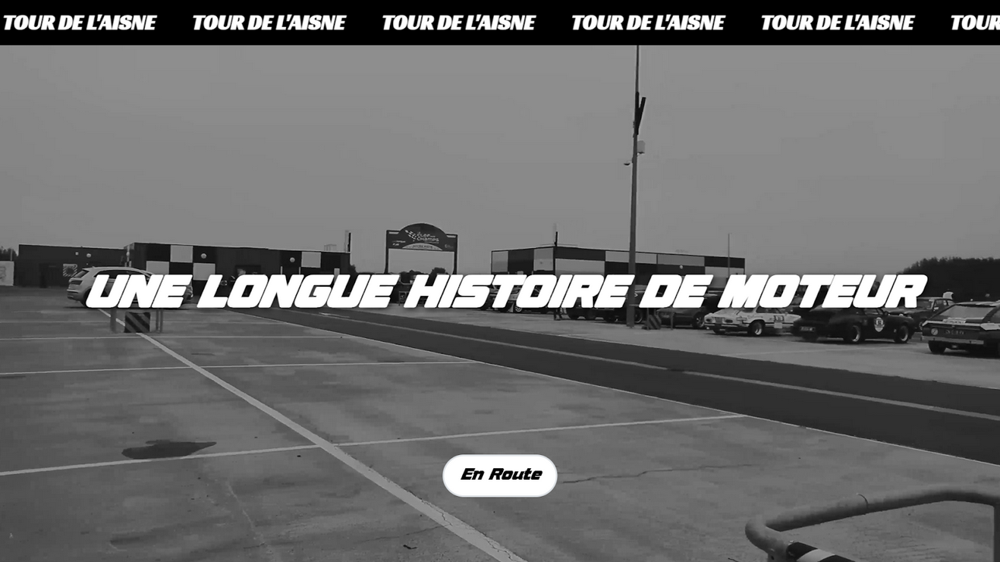
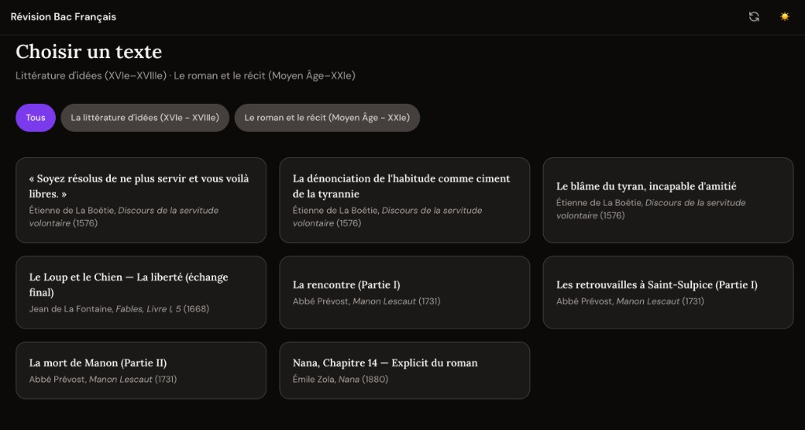
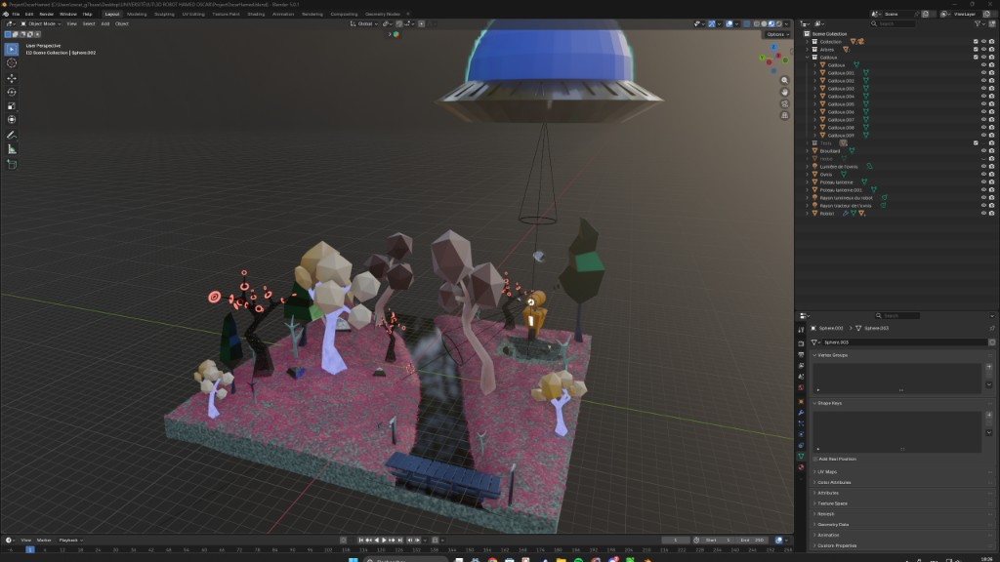

TXLFORMA – Plateforme de formations
React
Spring Boot
Stripe
Blender 3D
Sélection de projets en développement web, design et audiovisuel réalisés dans le cadre de mon parcours en BUT MMI et de travaux personnels.




